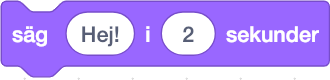
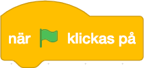
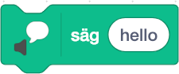

Sats-utmaningar
Utmaning Scratch_to_Pyhon_00
I den första utmaningen respekterar vi traditionen genom att göra “Hello, world!” -programmet. I denna utmaning använder vi ännu inte metoden för spelinlärning, utan följer instruktionerna för att lösa utmaningen. Utmaningen är säkert enkel att lösa. Syftet är att utforska programmeringsmiljön och hur den fungerar.
Instruktioner
- Klicka på det vita fönstret som säger “Hej!” med musen i biten .
- Skriv in texten “Hello, world!” i det vita fönstret som du nyss valde.
- Dra biten med musen eller fingret och kombinera med biten .
- Klicka på den gröna flaggan ovanför scenen.
Utmaning 00
Du kommer till utmaningen antingen genom att klicka på rubriken “Utmaning 00” eller på bilden av utmaningen.
Video som visar lösningen på Scratch_to_Python_00-utmaningen
Utmaning Scratch_to_Python_01
Scratch 3.0 som kom med Scratch innehåller nya funktioner. I denna utmaning gör vi en variation av den tidigare utmaningen och vi får Pycat att tala den engelska texten vi har skrivit. Om du vill att texten ska ändras till tal lägger du till tillägget “Text to Speech”, som redan har lagts till i den här uppgiften.
Instruktioner
- Klicka på det vita fönstret som säger “hello” med musen i biten 
- Skriv in texten “Hello, world!” i det vita fönstret som du nyss valde.
- Dra ihop bitarna med musen eller fingret.
- Klicka på den gröna flaggan ovanför scenen.
Utmaning 01
Du kommer till utmaningen antingen genom att klicka på rubriken “Utmaning 01” eller på bilden av utmaningen.
Video som visar lösningen av Scratch_to_Python_01-utmaningen
Utmaning Scratch_to_Python_02
I den här utmaningen är uppgiften att få Pycat att förflytta sig till den svarta öppningen så exakt som möjligt. I den här uppgiften tillämpas redan metoden för spelarinlärning för att hitta rätt koordinater.
Instruktioner
- I den här uppgiften behöver man hjälp av koordinater. Sätt rätt koordinater i denna bit

- Du kör koden med den gröna flaggan och ser hur bra det lyckas.
- Pycat återvänder till sin utgångsposition med mellanslag.
Utmaning 02
Du kommer till utmaningen antingen genom att klicka på rubriken “Utmaning 02” eller på bilden av utmaningen.